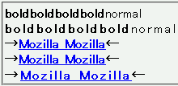
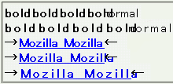

両端揃え（text-align:justify;）またはletter-spacingプロパティに0より大きい値を指定した要素内では以下の条件のいずれかに該当する場合に、ボールド体の文字列が重なる現象が発生する。
<div style="text-align:justify;"> <span style="font-weight:bold;">boldboldboldbold</span>normal</div> <div style="letter-spacing:2px;"> <span style="font-weight:bold;">boldboldboldbold</span>normal</div> <div style="font-weight:bold;">→ <a href="...">Mozilla Mozilla</a>←</div> <div style="font-weight:bold; text-align:justify;">→ <a href="...">Mozilla Mozilla</a>←</div> <div style="font-weight:bold; letter-spacing:2px;">→ <a href="...">Mozilla Mozilla</a>←</div>
前から2つはボールド体文字列と後続の文字列とが重なる場合の例、後から2つはリンク文字列と後続の文字列が重なる場合の例です。
Netscape7.1標準モード（WindowsXP）
Netscape7.1標準モード（WindowsMe）
Bugzilla-jpでは以下の項目が該当します。